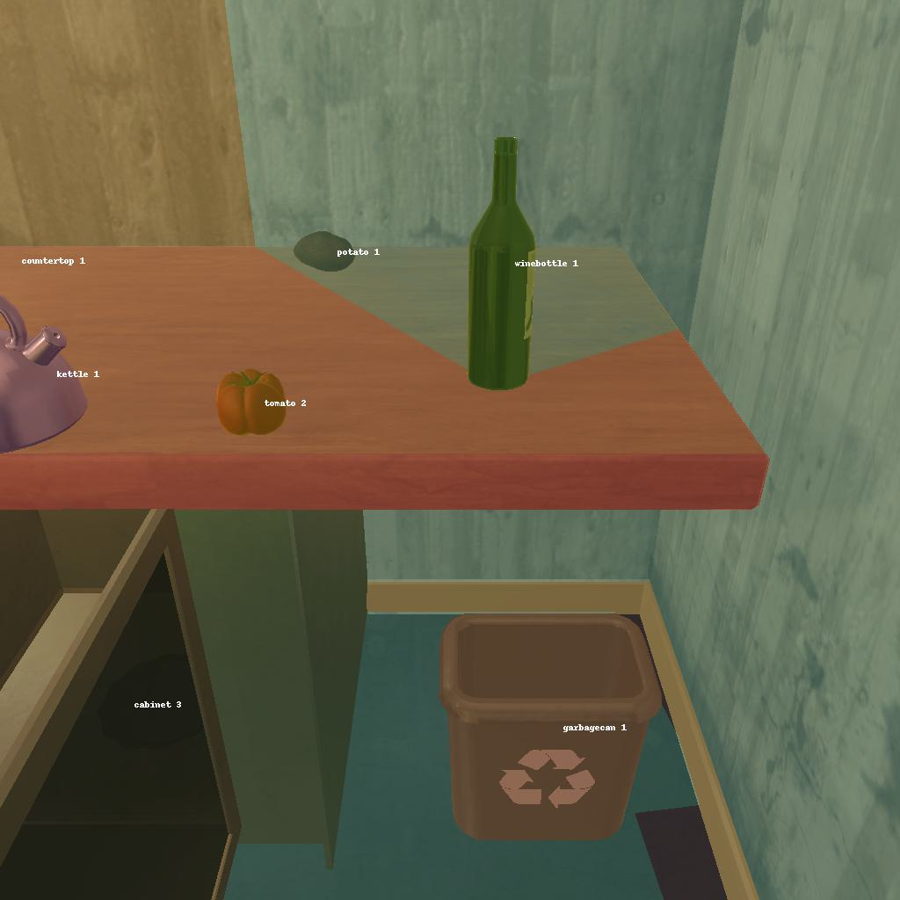

---------------------------------------------------------task: 26---------------------------------------------------------
--------------------------------------------------------------------------------------------------------------------------------------------------------------------
--------------------------------------------------------------------------------------------------------------------------------------------------------------------
Step:--------------------------------------------------------------------------7-------------------------------------------------------------------------------
----------------------------------------
VLM Prompt:
Image1:
Image2:
Image3:
**Instruction**
1. Analyze the provided image to identify all visible household objects, focusing on those relevant to the task description "find two kettle and put them in cabinet."
2. Use the analysis of the image and the task hint "The agent must find an object of the desired type, pick it up, find the correct location to place it, put it down there, then look for another object of the desired type, pick it up, return to previous location, and put it down there with the other object." to answer the question: what is the most reasonable action in the choices for the task description "find two kettle and put them in cabinet"?
4. Decide and write the answer using the template: The answer is: (i): , where i is the real number. If there is no desired object in the image, search every place based on **Initial Observation** to find the object. And if no one is exactly correct, choose a similar answer.
**Initial Observation**
You are in the middle of a room. Looking quickly around you, you can see countertop (1), coffeemachine (1), cabinet (1-4), drawer (1-8), sink (1), sinkbasin (1), garbagecan (1), fridge (1), microwave (1), dresser (1), sidetable (1)
**Answer Choices**
(1): go to countertop 1
(2): go to coffeemachine 1
(3): go to cabinet 1
(4): go to cabinet 2
(5): go to drawer 1
(6): go to sink 1
(7): go to sinkbasin 1
(8): go to garbagecan 1
(9): go to cabinet 4
(10): go to drawer 2
(11): go to fridge 1
(12): go to microwave 1
(13): go to dresser 1
(14): go to sidetable 1
(15): go to drawer 3
(16): go to drawer 4
(17): go to drawer 5
(18): go to drawer 6
(19): go to drawer 7
(20): go to drawer 8
(21): close cabinet 3
(22): take winebottle 1 from cabinet 3
(23): take kettle 1 from cabinet 3
(24): take tomato 2 from cabinet 3
(25): take potato 1 from cabinet 3
(26): examine cabinet 3
**Answer**
Let's think step by step by following the instructions.
----------------------------------------
----------------------------------------
Original Response:
The task is to find two kettles and put them in a cabinet. From the initial observation, we know that we are in a room with various household objects, and one of them is a kettle. Analyzing Image 1, we can see that there is a kettle (kettle 1) on the countertop 1, and there's an open cabinet (cabinet 3) with no visible kettle inside. According to the task hint, we need to pick up the kettle and put it in a cabinet. The most reasonable first action would be to take the kettle from the countertop.
The answer is: (23): take kettle 1 from cabinet 3.
----------------------------------------
----------------------------------------
>>> Refine Original VLM Response and Get Pure Action: take kettle 1 from cabinet 3
----------------------------------------
-----------------------------------------------------------------
Running time: 8.052506923675537 seconds
Total Money: 16.796640000000004
-----------------------------------------------------------------
-----------------------------------------------------------------
Text Observation:You pick up the kettle 1 from the cabinet 3.
-----------------------------------------------------------------
UNSUCCEED